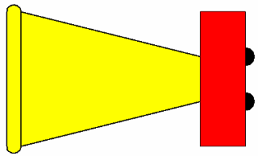

Editing blocks
There are two edit modes available for editing a block:
-
Open—Opens a block for editing just the block geometry, similar to the Draw In View command.

-
Edit—Edits a block in the context of its surrounding geometry.

You can choose an edit mode by selecting the Open command or the Edit command on the block shortcut menu. You also can specify a default edit behavior that is applied when you double-click a block. This option is available on the General tab in the Solid Edge Options dialog box.
Editing blocks using the Open command
You can edit a source block from the Library window by selecting the Open command from the block shortcut menu. All elements that comprise the source block are displayed for editing. Labels included in the block are displayed using the label name rather than the label value.
-
You can add, edit, and delete source block graphics.
-
You can add and edit label name-value pairs, add annotations that reference block property text, and add dimensions.
-
You can move, rotate, scale, mirror, and stretch any of the block elements.
When you exit the edit session by selecting the Close Block button on the ribbon, the changes are applied to the source block. If there are occurrences of the source block in the active document, they are updated too.
Editing a block in the context of other blocks using the Edit command
You can edit a block occurrence in the context of other 2D geometry using the Edit command on the block shortcut menu. This edit method opens the selected block for editing, while also showing the surrounding objects on the sheet. Only the selected occurrence of the block is opened for editing; all other block occurrences are hidden during editing, but they are updated when you finish.
When editing in the context of surrounding geometry:
-
The block is displayed at the same scale and rotation as other blocks on the sheet.
-
You can use the Fit command to fit all of the geometry on the sheet to the contextual editing window.
-
You can use Shift+Fit to fit the block geometry only.
-
-
You can reference the geometry outside of the block while you modify the block geometry. Use the following commands to update the block geometry:
-
Sketching tab (or Home tab)→Blocks group→Add to Block command

-
Sketching tab (or Home tab)→Blocks group→Remove from Block command

-
-
You can add dimensions that reference geometry outside the block. For example, you can place a dimension that controls the location of the block in relation to other objects.
Note:When you close the block after editing, dimensions that are driven by geometry outside the block are shown as detached.
For more information, see Edit a block in context.
Editing multiple blocks
You can select multiple blocks to edit the color, line style, line width, and block scale. If the selected blocks have the same line color, line type, line width, or block scale, the values for these properties are displayed. If they are different, the line color displays a blank color, the line type displays no selection, the line width and block scale contain no value.
Editing block occurrences
When you select a block occurrence:
-
Edit handles are displayed. There is one handle for the block graphics and one handle for each label that can be modified in the block. If a label has been defined so that its position is locked, then no edit handle is displayed.
-
You can use the Block Occurrence Selection options on the command bar to change the block name, block scale, block properties, and 2D element line style and color.
Editing labels
You can edit a label that is part of a block using the Open command or the Edit command on the block shortcut menu. If you select the command from the Library tab, then your edits update the source block. If you select the command from the drawing, then your edits update the block occurrence. When you click the Return button, all changes are saved to the block and label definition.
Editing block labels produces these results:
-
If you edit a label definition in the source block, and if label formatting and location properties have been changed locally in individual block occurrences, the occurrence settings are preserved.
-
Changing an existing label so that it is set to Use same value in all occurrences changes the value of all occurrences to the value defined in the source block.
-
Deleting a label in the source block deletes it from all occurrences.
-
Adding a new label adds it to all occurrences. The default label location and value is taken from the source block.
-
Changing an existing label so that the Lock position within block option is set changes all of the occurrence labels to the location specified in the source block.
-
Moving a label that has the Lock position within block option set moves all of the labels in all occurrences relative to the source block origin point.
Renaming blocks and views
Blocks and views created from blocks can be renamed using the Rename command, which is available only from the shortcut menu in the Library. Block names and view names must be unique within the active document.
After typing the new block name, you must press Enter to apply the change.
Deleting blocks
Blocks can be deleted only using the shortcut menu in the Library. When you delete a block in the Block Selection Pane, all occurrences of the block in the active document, including all views of the block, are deleted with it.
You can cut and paste blocks and copy and paste blocks between documents using those commands from the selected block's shortcut menu. When pasted in the new document, a new occurrence and source block, are created.
Replacing blocks
A block and all its occurrences can be replaced globally with a single command, or you can choose to replace only a selected instance of the block. The replacement replaces the block graphics as well as its attributes.
The Replace command is available only from a block's shortcut menu. When you replace from the Block Selection Pane in the Library, all occurrences of the selected block in the active document are replaced. When you replace a selected block in the drawing, you can choose whether to replace that one or all instances of the block.
Unblocking blocks
The Unblock command operates on graphics on the 2D Model sheet or active drawing sheet, dropping the selected block occurrence to its individual components or elements. If the selected block is nested, only the top level block will be unblocked.
If you want to select an existing block's graphics as the basis for a new source block or another view of an existing block and the block occurrence is not selectable, use the Unblock command on the block shortcut menu in the drawing before selecting the Block command or the Add Block View command.
If you dragged a file into the drawing and the contents of the file translated as a single block, you can separate the contents into individual elements using the Unblock command. This makes them selectable when you create a new block or add a block view.
Cut, copy, paste
You can copy and paste block occurrences between sheets and between documents. When a block occurrence is pasted into a document, the settings on the source block determine the values of the labels of the new occurrences.
How do I
Edit block graphicsEdit a block in context
Add a view to a block
Rename a block
Replace a Block
Delete a block
Unblock a block
Look up more details
Edit (Block in Context) commandAdd to Block command
Remove from Block command
Open (Edit Block Graphics) command
Rename Block command
Replace Block command
Replace Block dialog box
Delete (Block) command
Unblock command
Unblock All command
Quick links
Creating blocksBlock labels and properties
Connectors